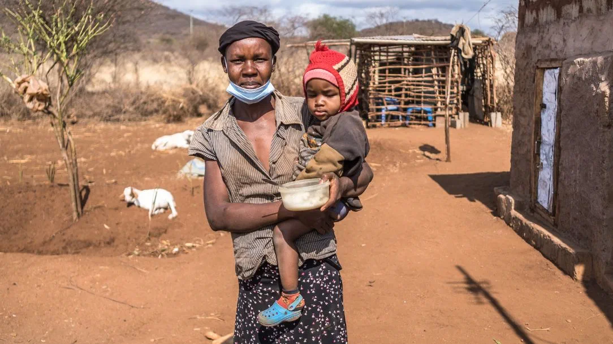

Understanding the Issue
Hunger in Africa is a complex issue driven by various factors including poverty, conflicts, and environmental challenges. According to recent statistics, over 250 million people in Africa are undernourished, facing severe food insecurity and malnutrition.
Ways to Prevent the Increase of Hunger
- Increase Agricultural Productivity: Support smallholder farmers with modern farming techniques and resources to improve crop yields.
- Enhance Food Distribution: Improve infrastructure for food storage and transportation to reduce waste and increase access to food in remote areas.
- Promote Sustainable Practices: Encourage sustainable agricultural practices to protect the environment and ensure long-term food security.
- Support Education and Awareness: Raise awareness about nutrition and provide education on how to manage and optimize food resources.
- Address Political and Economic Instability: Work towards resolving conflicts and improving economic conditions to create a more stable environment for development.
By taking collective action and addressing these critical areas, we can make significant strides toward reducing hunger and improving the quality of life for millions of people in Africa.